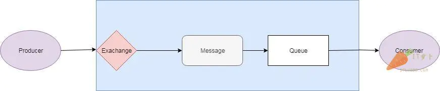
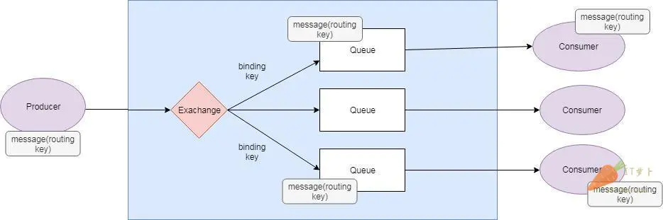
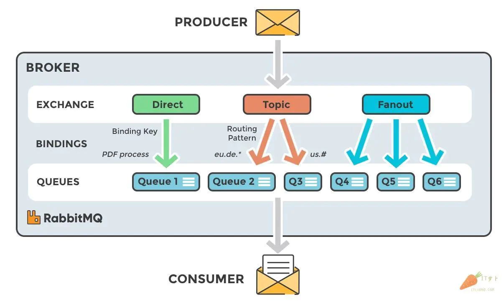
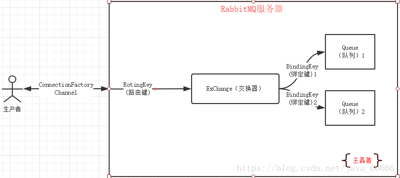
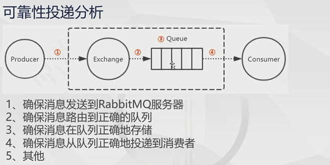

rabbitmq底层是基于erlang开发
名词解释
生产者（Producer）：发送消息的应用。 消费者（Consumer）：接收消息的应用。 队列（Queue）：存储消息的缓存。 消息（Message）：由生产者通过RabbitMQ发送给消费者的信息。 连接（Connection）：连接RabbitMQ和应用服务器的TCP连接。 通道（Channel）：连接里的一个虚拟通道。当你通过消息队列发送或者接收消息时，这个操作都是通过通道进行的。 交换机（Exchange）：交换机负责从生产者那里接收消息，并根据交换类型分发到对应的消息列队里。要实现消息的接收，一个队列必须到绑定一个交换机。 绑定（Binding）：绑定是队列和交换机的一个关联连接。 路由键（Routing Key）：路由键是供交换机查看并根据键来决定如何分发消息到列队的一个键。路由键可以说是消息的目的地址。


RabbitMQ里的消息流程
- 生产者（producer）把消息发送给交换机。当你创建交换机的时候，你需要指定类型。交换机的类型接下来会讲到。
- 交换机（exchange）接收消息并且负责对消息进行路由。根据交换机的类型，消息的多个属性会被使用，例如路由键。
- 绑定（binding）需要从交换机到队列的这种方式来进行创建。在这个例子里，我们可以看到交换机有到两个不同队列的绑定。交换机根据消息的属性来把消息分发到不同的队列上。
- 消息（message）消息会一直留在队列里直到被消费。
- 消费者（consumer）处理消息。
交换机类型

Exchange Type
- 直接（Direct）：直接交换机通过消息上的路由键直接对消息进行分发。 一对一 完全匹配
- 扇出（Fanout）：一个扇出交换机会将消息发送到所有和它进行绑定的队列上。 群发 广播
- 主题（Topic）：这个交换机会将路由键和绑定上的模式进行通配符匹配。 一对多 规则匹配
- 消息头（Headers）：消息头交换机使用消息头的属性进行消息路由。 x-match设置为any和all
消息执行
delivery-mode有两个值：1表示非持久化，2表示持久化消息
delivery-mode=1 代表纯内存队列 性能高 不需要磁盘io
delivery-mode=2 代表支持磁盘存储队列 持久化 安全性高 日志追加方式 顺序io
消息持久化
\1. exchange持久化,在声明时指定durable => true channel.ExchangeDeclare(ExchangeName, “direct”, durable: true, autoDelete: false, arguments: null);//声明消息队列，且为可持久化的 2.queue持久化,在声明时指定durable => true channel.QueueDeclare(QueueName, durable: true, exclusive: false, autoDelete: false, arguments: null);//声明消息队列，且为可持久化的 3.消息持久化,在投递时指定delivery_mode => 2(1是非持久化). channel.basicPublish(“”, queueName, MessageProperties.PERSISTENT_TEXT_PLAIN, msg.getBytes()); durable持久化 autoDelete自动删除 exclusive排他性 Connection
使用ProtoBuf序列化消息
支持confirm确认机制

RabbitMQ安装 1.首先安装erlang 再安装rabbitMq 2.一般在安装完成之后 服务会自动运行 会生成ERLANG_HOME环境变量 3.进入sbin目录下 检查rabbitMq运行状态 rabbitmqctl status 4.运行 rabbitmqctl stop 命令来停止服务 5.运行 rabbitmq-server -detached命令来重启服务并后台运行 6.地址 http://127.0.0.1:15672/ 默认账号密码 guest guest 7.日志在 C:/Users/Administrator/AppData/Roaming/RabbitMQ/log/文件夹下
主题交换机 通配符
- *代表一个单词
- #代表0个或多个单词
自动删除无人消费的消息
- 设置队列的消息的TTL
- 指定消息的TTL
死信交换机DLX Dead Letter Exchange
死信队列Dead Letter Queue
- 消息过期
- Reject/Nack并且 requeue == false
- 队列达到最大长度 先入列的消息会变成死信队列
过期时间设置和优先级
- 通过队列属性设置消息的过期时间x-message-ttl和优先级x-max-priority
- 对每条消息进行设置**.expiration(“10000”)和.priority(5)**
延迟队列
- 延迟队列插件
- TTL+DLX
流量控制
- 服务端 Flow Control内存 ram disc 磁盘空间超过40% 或者大于1G
- 消费端 prefetch count（channel.basicQos(3)）预取的数量

1、保证消息发送到交换机上
- 事务Transaction 模式 阻塞式
channel.txSelect() –> channel.txCommit() –> channel.txRollback()
- Confirm模式 异步
channel.confirmSelect() –> Basic.Ack
2、路由保证
- ReturnListener
- 备份交换机
3、消息的存储
- 队列持久化
- 交换机持久化
- 消息持久化
4、消费者确认
- channel.basicAck() 手工应答
- channel.basicReject() 单条拒绝
- channel.basicNack() 批量拒绝
5、其他
- 消费者回调 消息落库 消费状态 待发送 -》 发送完成 -》 待消费 -》消费完成
- 补偿机制 消息重发或者确认
- 消息幂等性
- 消息顺序性 单对单 保证顺序
自动ACK消息从队列中删除 -> 发送给消费者之后
高可用架构
集群 只能在lan网上部署，不可以在wan网 广义网需要插件federation或shovel
通信基础
- erlang.cookie、hosts
磁盘节点与内存结点
- 必须存在一个及以上的Disc磁盘节点，任意个数的RAM内存结点
配置步骤
镜像队列
HA方案
注意：
- 生产者先处理业务再发送消息
- 消费者创建交换机、队列、绑定关系
- 运维监控 zabbix
confirmCallback机制
只有所有的broker收到信息 会执行confirmCallback
returnsCallback 机制
如果消息未能投递到目标queue将调用returnsCallback
动态创建和监听（此种监听 不可以指定某一队列有n个消费者 只可以指定n个消费者去消费绑定的所有监听队列）
- 使用rabbitAdmin创建交换机、队列以及绑定关系
- 使用SimpleMessageListenerContainer添加需要监听的队列以及指定监听器
- 实现ChannelAwareMessageListener的onMessage方法进行监听
转载请注明来源，欢迎对文章中的引用来源进行考证，欢迎指出任何有错误或不够清晰的表达。可以在下面评论区评论，也可以邮件至 jaytp@qq.com